1.单片机、RTOS架构的概念
1.1 RTOS的概念
1.1.1 用人来类比单片机程序和RTOS
妈妈要一边给小孩喂饭，一边加班跟同事微信交流，怎么办？
1.1.1.1 我无法一心多用
对于单线条的人，不能分心、不能同时做事，她只能这样做：
这种做法，在软件开发上就是一般的单片机开发，没有用操作系统。
1.1.1.2 我可以一心多用
对于眼明手快的人，她可以一心多用，她这样做：
左手拿勺子，给小孩喂饭
右手敲键盘，回复同事
两不耽误，小孩“以为”妈妈在专心喂饭，同事“以为”她在专心聊天
但是脑子只有一个啊，虽然说“一心多用”，但是谁能同时思考两件事？
只是她反应快，上一秒钟在考虑夹哪个菜给小孩，下一秒钟考虑给同事回复什么信息
这种做法，在软件开发上就是使用操作系统，在单片机里叫做使用RTOS。
RTOS的意思是：Real-time operating system，实时操作系统。
我们使用的Windows也是操作系统，被称为通用操作系统。使用Windows时，我们经常碰到程序卡死、停顿的现象，日常生活中这可以忍受。
但是在电梯系统中，你按住开门键时如果没有即刻反应，即使只是慢个1秒，也会夹住人。
在专用的电子设备中，“实时性”很重要。
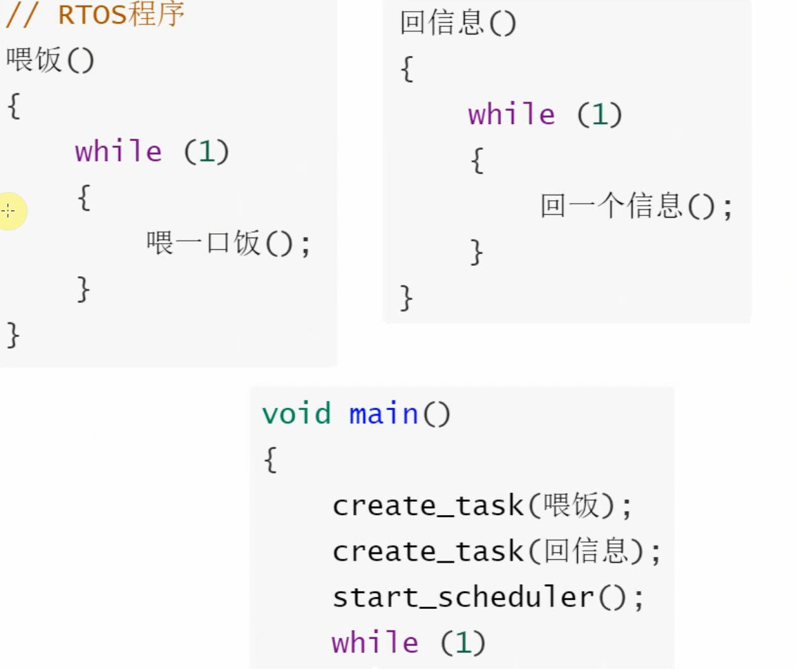优先级高的先进行，优先级一样的交叉进行
1.1.2 程序简单示例
// 经典单片机程序
void main()
{
while (1)
{
喂一口饭();
回一个信息();
}
}
------------------------------------------------------
// RTOS程序
喂饭()
{
while (1)
{
喂一口饭();
}
}
回信息()
{
while (1)
{
回一个信息();
}
}
void main()
{
create_task(喂饭);
create_task(回信息);
start_scheduler();
while (1)
{
sleep();
}
}
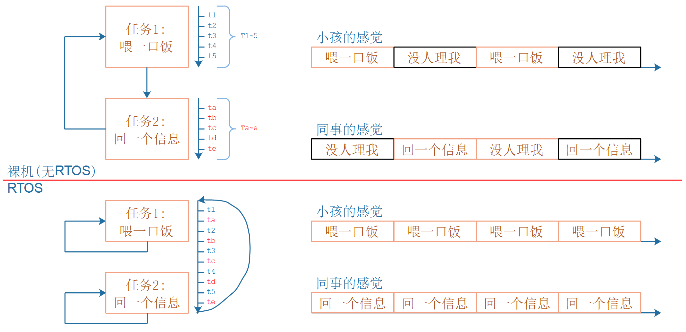
1.2 架构的概念
1.2.1 用人来类比电子产品
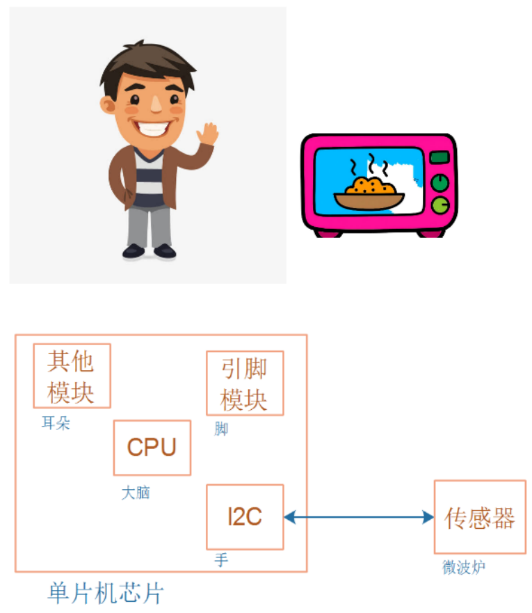
在电子系统中，CPU就是大脑，CPU有很多种类别，被称为架构。
常见的有：
ARM： 目前主流的架构，用得最广，芯片公司需要付费购买，再搭配各种模块才能设计出芯片。 目前华为被美国制裁，无法获得最新的ARM架构； 对于其他公司，购买ARM新架构的价格也不低。
RISC-V： 后起之秀，开源、免费。 目前华为海思的HI3861、乐鑫的ESP32-C3等芯片，都是使用RISC-V的单片机芯片； 平头哥和全志的D1芯片，是使用RISC-V的、能运行Linux的芯片； RISC-V作为全新的架构，没有历史包袱，设计优美，在技术上大有可为，另外它开源无需授权，能摆脱技术的卡脖子问题。
1.2.2 要深入理解RTOS就必须深入理解CPU架构
如果只是使用别人移植好的RTOS来写程序，当然不需要了解CPU架构。
甚至编写驱动程序时，也不需要了解CPU架构：因为我们操作的是CPU之外的设备，不是操作CPU。
但是，如果你想达到如下目标，就需要先了解CPU架构：
深入理解RTOS的内部实现
移植RTOS
解决疑难问题
1.2 主要内容

1.3 官方手册
官网：
API查询：
2.堆和栈
2.1 堆
一块空闲的内存，用的时候从里面取出，不用的时候再释放回去
2.1.1 搭建一个简单的molloc函数
如下就是一块空闲的内存，当我们在这块空闲的内存上进行分配时，这块内存就被称之为堆
char heap_buf[1024];

这样简单的malloc函数无法实现free函数的操作
char heap_buf[1024];
int pos = 0;
void *my_malloc(int size)
{
int old_pos = pos;//保存内存起始地址
pos += size; //记录新的内存起始地址
return &heap_buf[old_pos];//返回已经分配好空闲的地址区域
}
void my_free(void *buf)
{
/* err */
}
2.1.2 堆的调试
内存分配结束后，成功获得起始地址

在这里循环执行几次，查看内存

在内存中查看

每执行一句，在内存监视器中看到相应的内存中会赋值我们的数字

2.2 栈
2.2.1 搭建函数多重调用模型
void c_fun(void)
{
}
void b_fun(void)
{
}
int a_fun(int val)
{
int a = 8;
a += val;
b_fun();
c_fun();
return a;
}
int main(void)
{
a_fun(46);
return 0;
}
2.2.2 问题——返回地址保存在哪里
main函数调用函数a之前，会先保存a函数后下一条指令的地址放在LR寄存器中，然后才会调用函数a


为防止出现LR寄存器被覆盖的情况，所以函数内部会把LR寄存器的值保存到栈中
即问题答案为：返回地址保存在栈中
2.2.3 使用栈的过程
划分栈（用来保存LR寄存器、、、局部变量）的空间
保存例如LR寄存器的数值、局部变量数值到栈中
执行代码


BL.W是一条汇编指令：branch and link，译为跳转、保存返回地址。它保存的是下一条汇编指令的地址：
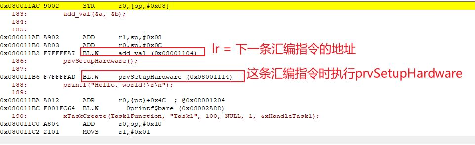


2.3 对于RTOS的任务栈
每个任务都有不同的栈

2.4 什么是任务？
我们先来举几个反例。
这肯定是不对的，或者说不是完全准确的。如果说任务是函数，那么下面这段代码：
voidTask1Function(void*param)
{
while(1)
{
printf("1");
}
}
这是一个任务吗？其实不能这么说，它是任务的一个函数，是任务的一部分，但不是任务。如果一个函数就等于任务的话，这个函数，保存在flash中，在我们切换任务的时候并不需要保存它(对于任务而言，我们是可以对它进行创建、删除、切换等操作的)；既然它都已经保存在Flash中了，我还创建或者删除它干什么呢？
所以函数是任务的一部分，不是任务的全部。
那么任务到底是什么呢？我们可以这样认为：任务就是一个运行着的函数。我们来看一段代码来理解这句话：
voidadd_val(int*pa,int*pb)
{
volatileinttmp;
tmp=*pa;
*pa=tmp+*pb;
}
voidTaskFunction(void*param)
{
inta=1;
intb=2;
add_val(&a,&b);
}
我们说任务是一个运行的函数，它运行的时候需要：
2.5 任务的表示
一个任务有：
其中地址和寄存器的值都可以保存到栈里，所以我们就可以这样来表示一个任务：
structTask{
// 函数指针
// 栈的位置
};
最核心的就是这样个元素。我们来看看FreeRTOS的任务相关内容：
我们来看看这个结构体长什么样：
打叉的地方并不是必须的，因为他们都在各种宏开关里。在上图中，着重画出了表示栈的变量：栈头，栈尾；但是我们没有看到函数指针！在创建任务结构体的时候，把函数的位置保存到了栈里，所以这个机构提最核心的内容就是栈，但是我们不能够认为：任务就是栈。因为：
3. 从官方源码精简出第一个FreeRTOS程序
3.1 下载
注意使用的是Github下载

3.1.1 参考手册
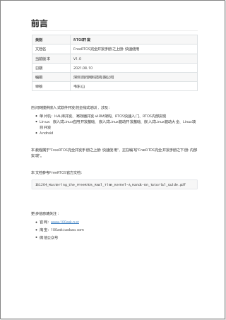3.2 目录结构
核心文件

3.2.1 FreeRTOS里的Demo目录命名规则
既然是Demo，肯定要指定两项：芯片、编译器。
所以答案之一是：芯片+编译器，比如：MCF5235_GCC。
有些目录还指定了指令集，比如：CORTEX_STM32F103_Keil 。
3.2.2 FreeRTOS里portable目录命名规则
移植FreeRTOS时，不同的编译器使用的语法稍有差别，所以必定有[编译器]目录，
在[编译器]下，存放[架构]相关的文件。
目录示例：
GCC\ARM_CA9
RVDS\ARM_CM3
3.3 删减目录（删除不用的）
以Keil工具下STM32F103芯片为例，它的FreeRTOS目录如下，按照如下进行删减

3.3.1 删减流程


3.3.2 删减结果


3.4 编译、执行
原来的工程是使用Keil4编写的，我们需要把工程更改为Keil5
点击之后，重新打开

编译时会产生一堆错误，这很正常，因为我们之前删除了很多文件，这里慢慢修改就好了
3.4.1 添加原先的common

打开common文件，删除一些用不到的文件


3.4.2 重新编译

没有问题了
4. 修改打印功能
默认demo中的例程需要原厂的LCD屏幕，这里我们更改为打印操作，在MDK上面仿真
对于大型的工程，比较适合使用Sourceinsight阅读源码
4.1 任务
4.2 删除无关代码
将一些我们不用到的文件先删除，如下图所示

编译

4.2.1 错误更改1
逐一解决，分析缺少的函数，然后使用sourcein查找该函数


重新编译，不显示该错误
4.2.2 错误更改2

在sourceinsight里面的搜索该函数，并查找引用

main函数中两次使用到了这个函数

前往相关的文件中，删除函数，并注意删除它们额外的函数声明、别人对它的调用
注意：fputc这个函数删除其函数内容即可，在接下来的操作中，我们会使用它
保存后前往MDK重新编译，错误减少
4.2.3 错误更改3

接下来的操作大致都差不多，主要是了解MDK和sourceinsight之间如何使用改错
直至修改至无错误，继续进行下一步
4.3 修改serial.c文件
因为我们需要一步一步的学习，所以我们需要先删除不用的函数，然后逐步学习
4.3.1 完善串口初始化函数
void SerialPortInit( void )
{
unsigned long ulWantedBaud = 115200;
USART_InitTypeDef USART_InitStructure;
GPIO_InitTypeDef GPIO_InitStructure;
/* Enable USART1 clock */
RCC_APB2PeriphClockCmd( RCC_APB2Periph_USART1 | RCC_APB2Periph_GPIOA, ENABLE );
/* Configure USART1 Rx (PA10) as input floating */
GPIO_InitStructure.GPIO_Pin = GPIO_Pin_10;
GPIO_InitStructure.GPIO_Mode = GPIO_Mode_IN_FLOATING;
GPIO_Init( GPIOA, &GPIO_InitStructure );
/* Configure USART1 Tx (PA9) as alternate function push-pull */
GPIO_InitStructure.GPIO_Pin = GPIO_Pin_9;
GPIO_InitStructure.GPIO_Speed = GPIO_Speed_50MHz;
GPIO_InitStructure.GPIO_Mode = GPIO_Mode_AF_PP;
GPIO_Init( GPIOA, &GPIO_InitStructure );
USART_InitStructure.USART_BaudRate = ulWantedBaud;
USART_InitStructure.USART_WordLength = USART_WordLength_8b;
USART_InitStructure.USART_StopBits = USART_StopBits_1;
USART_InitStructure.USART_Parity = USART_Parity_No ;
USART_InitStructure.USART_HardwareFlowControl = USART_HardwareFlowControl_None;
USART_InitStructure.USART_Mode = USART_Mode_Rx | USART_Mode_Tx;
USART_InitStructure.USART_Clock = USART_Clock_Disable;
USART_InitStructure.USART_CPOL = USART_CPOL_Low;
USART_InitStructure.USART_CPHA = USART_CPHA_2Edge;
USART_InitStructure.USART_LastBit = USART_LastBit_Disable;
USART_Init( USART1, &USART_InitStructure );
//USART_ITConfig( USART1, USART_IT_RXNE, ENABLE );
USART_Cmd( USART1, ENABLE );
}
之后再头文件中声明
4.3.2 对printf进行重定向
此函数原本是将字符ch打印到文件指针stream所指向的文件流去的，现在我们不需要打印到文件流，而是打印到串口1。对函数进行修改
int fputc( int ch, FILE *f )
{
USART_TypeDef* USARTx = USART1;
while((USARTx->SR & (1<<7)) == 0); //数据没有被发送出去，等待一会
USARTx->DR = ch;
return ch;
}
注意，需要包含头文件stdio.h，否则FILE类型未定义。勾选了Use MicroLib选项，重定向fputc()函数后，我们就可以在工程代码中使用printf()函数了，该函数不需要在头文件中声明
puts输出时遇到空格就不发送了,C有三个用于输出字符串的标准库函数puts（）、fputs（）和printf（），注意区别。
4.4 修改main函数
int main( void )
{
#ifdef DEBUG
debug();
#endif
prvSetupHardware();
printf("Hello,world");
/* Start the scheduler. */
vTaskStartScheduler();
return 0;
}
4.5 仿真测试
输出成功

5. 第1个FreeRTOS程序及引申
5.1创建2个打印任务
void Task1Function( void * param )
{
while(1)
{
printf("1");
}
}
void Task2Function( void * param )
{
while(1)
{
printf("2");
}
}
/*-----------------------------------------------------------*/
int main( void )
{
TaskHandle_t xHandleTask1;
#ifdef DEBUG
debug();
#endif
prvSetupHardware();
printf("Hello,world");
xTaskCreate(Task1Function,"Task1",100,NULL,1,&xHandleTask1);
xTaskCreate(Task2Function,"Task2",100,NULL,1,NULL);
/* Start the scheduler. */
vTaskStartScheduler();
return 0;
}
使用xTaskCreate函数即可，记住RTOS属于分时运行的本质，导致看起来像任务并行。
5.2 在Keil中无法在源文件中设置断点，怎么解决？


5.3 怎样设置Keil才能下载Flash并让程序自动运行？


5.4 怎么设置才能让程序在板子上调试？


5.5 在Keil中怎么重新使用模拟器运行代码？

指定DLL: DARMSTM.DLL
指定参数: -pSTM32F103ZE

5.6FreeRTOS源码结构


5.7编程规范（FreeRTOS自身的）
5.7.1 数据类型

5.7.2 变量名

5.7.3 函数名

5.7.4 宏的名

6. 创建任务函数详解
多使用结构体来编写代码，使用面向对象的思想，
对于每一个任务，都会使用一个TCB来进行描述，
BaseType_t xTaskCreate( TaskFunction_t pxTaskCode,
const char * const pcName, /*lint !e971 Unqualified char types are allowed for strings and single characters only. */
const configSTACK_DEPTH_TYPE usStackDepth,
void * const pvParameters,
UBaseType_t uxPriority,
TaskHandle_t * const pxCreatedTask )
注意事项：
最后的那个句柄只是这个结构体的一个指针罢了
typedef struct tskTaskControlBlock * TaskHandle_t;


6.1 动态内存的使用
动态分配：xTaskCreate函数会自动给我们malloc出一块空间
6.2 静态创建任务
对应程序：06_freertos_example_createtaskstatic
静态分配：使用xTaskCreateStatic函数，手动分配空闲内存区域


6.2.1 怎么配置FreeRTOS才能使用xTaskCreateStatic函数？


6.3 后面创建的任务先运行

后面的任务插入链表时，pxCurrentTCB执行它
创建任务时代码如下，后创建的最高优先级任务先执行：

6.4 任务函数实验
对应程序：07_freertos_example_test
6.4.1 优先级实验


软件模拟的逻辑分析仪上面的显示如下，正常：

逻辑分析仪显示结果

高优先级任务没有执行完之前，低优先的任务压根没有办法执行
FreeRTOS内部有这样一种调度机制：
高优先级的任务先执行，同等优先级的任务交替执行
补充：如果ABC的优先级都为1，任务C最后创建，执行顺序如下，若优先级均为0，则执行顺序如下

6.4.2 删除任务
删除任务使用vTaskDelete函数
void vTaskDelete( TaskHandle_t xTaskToDelete )
自杀：vTaskDelete(NULL)
被杀：别的任务执行vTaskDelete(pvTaskCode)，pvTaskCode是自己的句柄
杀人：执行vTaskDelete(pvTaskCode)，pvTaskCode是别的任务的句柄

删除静态创建的任务时，同样需要在vTaskDelete函数中填写xTaskCreateStatic函数的返回值，同样是一个句柄
6.4.3 使用同一个任务函数创建多个任务
创建一个通用的函数

然后使用函数创建任务

软件UART输出结果为

因为函数的栈不一样，他们的局部变量保存在他们自己的栈中，所以互不影响。
6.4.4 栈大小实验

总结：在使用malloc分配函数的时候，会在内存前面创建一个头部，存放所分配内存的长度信息，而free函数的时候会查看这个头部的长度信息进行内存的释放。

接下来我们查看我们之前所写的代码，我们对栈的深度基本都是100*4字节。

因为xTaskCreate函数会使用两次molloc函数

所以各任务所使用的栈在内存中的显示如图：

再需要了解的知识是，栈是由高地址向低地址的，所以，在我们所创建的函数中，如果拥有较大的局部变量，那么就会使得头部的信息被覆盖，从而导致程序错误，接下来我们举例说明：
在任务1 中创建一个很大的局部变量，使得超过其任务创建函数的栈大小

运行结果显示：

所以，在创建任务的时候，程序的栈需要认真的考虑其大小是否满足我们的需求
7. 问题补充
问：RT-Thread是如何退出任务、删除任务不参与调度的？
答：RT-Thread可以直接返回，因为他设置了返回地址：你返回的话，系统会帮你自杀。
问：任务之间可以随便互杀还是有什么规则？
答：FreeRTOS没有权限管理，可以随意互相删除。全靠程序员自己管理了，删除之后想用还得重新创建。
问：既然可以杀别的任务，任务可以创建任务吗？
答：可以。
问：事先分配好和动态分配有啥区别呢，存储位置不一样吗？事先分配好放在bss，动态分配在堆区？
答：这句话这样说基本没错，对于freeRTOS它就有点特别。freeRTOS是定了一个很大的数组，malloc是从这个数组里分配空间。所以：堆在数组里，堆在BSS里。
问：源码里定义了一个很大的数组，这个数组多大有规定吗？
答：没有规定，不要超出你的内存范围就可以。
问：全局变量和静态变量保存在数据段或者BSS段吧？
答：有初始值的全局变量、静态变量，保存在data段；没有初始值的全局变量、静态变量，保存在BSS段。
问：请问堆的定义不是一块空闲的内存吗，如果在data段定义一个数组来用，那么需要堆干嘛呢，是freertos的特别用处吗？
答：1. 堆的定义：被管理的一块空闲内存，可以实现malloc、free函数，从这块内存里分配、释放内存；
2. 我可以用一个数组来占坑，霸占一块空闲内存，然后实现malloc、free，所以定义了数组之后，还需要堆干嘛呢？这个堆，就是这个数组，我需要这个数组占坑；
3. FreeRTOS使用数组来占坑，是一个很妙的主意，这个数组太大了，编译器会帮你报错。
问：任务创建 、任务函数和任务控制块， 联系和区别。
答：创建一个任务：我们需要分配一个结构体来表示这个任务，这个结构体就是任务控制块；一个任务，总得做些什么事情吧？这就是一个函数；
问：freertos在数据段利用数组占空间，他自己也实现了malloc或free函数吗？
答：实现了。
8. 任务状态理论讲解
8.1 任务状态理论讲解
Tick中断处理函数会判断是否切换任务

8.1.1 FreeRTOS的系统节拍
任何操作系统都需要提供一个时钟节拍，以供系统处理诸如延时、超时等与时间相关的事件。
时钟节拍是特定的周期性中断，这个中断可以看做是系统心跳。中断之间的时间间隔取决于不同的应用，一般是1ms – 100ms。时钟的节拍中断使得内核可以将任务延迟若干个时钟节拍，以及当任务等待事件发生时，提供等待超时等依据。时钟节拍率越快，系统的额外开销就越大。
对于Cortex-M3内核的STM32F103和Cortex-M4内核的STM32F407以及F429，教程配套的例子都是用滴答定时器来实现系统时钟节拍的。
SysTick定时器被捆绑在NVIC中，用于产生SysTick异常（异常号：15），滴答定时器是一个24位
的递减计数器，支持中断。使用比较简单，专门用于给操作系统提供时钟节拍。
FreeRTOS的系统时钟节拍可以在配置文件FreeRTOSConfig.h里面设置：
#define configTICK_RATE_HZ ( ( TickType_t ) 1000 )
如上所示的宏定义配置表示系统时钟节拍是1KHz，
1/100 = 1ms
即1ms。
8.1.2 中断时间tick的配置
FreeRTOS执行的时间基准是1MS，对于很多其他的RTOS，我们可以指定每个任务执行多少个Tick，但是FreeRTOS规定了基准的Tick是1MS，不能规定任务执行的时间。对于RTTheard，我们可以规定任务1执行10Tick，任务2执行1Tick，但是FreeRTOS不支持。

8.1.3 xTaskGetTickCount获取当前的Tick时钟节拍数
在tasks.c文件夹中有一个函数，调用它即可获得当前系统运行的时钟节拍数
此函数用于在任务代码里面调用，如果在中断服务程序里面调用的话，需要使用函数xTaskGetTickCountFromISR，这两个函数切不可混用
TickType_t xTaskGetTickCount( void )
{
TickType_t xTicks;
/* Critical section required if running on a 16 bit processor. */
portTICK_TYPE_ENTER_CRITICAL();
{
xTicks = xTickCount;
}
portTICK_TYPE_EXIT_CRITICAL();
return xTicks;
}
8.1.4 使用vTaskDelay时，如何延时若干毫秒？
假设配置项configTICK_RATE_HZ等于1000，则tick周期为1ms，那么pdMS_TO_TICKS（）这个宏修饰的参数和直接输入vTaskDelay（ ）函数的参数所代表的意义是一样的。
vTaskDelay(10);
vTaskDelay(pdMS_TO_TICKS(10)); //两行代码的作用此时一模一样
想延时N毫秒，就使用vTaskDelay(N)。
有一个宏：pdMS_TO_TICKS(ms)，可以把毫秒转换为Tick数。
问题来了：为了方便使用FreeRTOS，我们会根据官网
http://www.freertos.org/a00110.html的资料修改
FreeRTOS Config.h 中参数，常修改的参数就是
configTICK_RATE_HZ，如果我们这里把他修改为其他数目呢？不是1000ms的话，那么
vTaskDelay（）函数中的延时就不是以MS为单位了，这里容易引发问题，所以我们这里引出一个宏
pdMS_TO_TICKS，使用这个宏来确定我所输入的参数是tick的时钟节拍数目，
这算是一个编程习惯的问题
设置一个宏来确保自己所输入的参数正确。
8.1.5 注意事项
这里记的确定以下两点以使得逻辑分析仪中的时钟稳定。
确认代码中设置时钟时用的频率
确认Options中Xtal的频率


8.2 任务状态
任务切换的基础：tick中断
8.2.1 任务状态的分类

任务状态转换图

8.3 四种任务状态
8.3.1 Ready就绪状态
这个任务完全准备好了，随时可以运行：只是还轮不到它。这时，它就处于就绪态(Ready)。
8.3.2 Blocked阻塞状态
换句话讲就是等待事件发生然后运行
在阻塞状态的任务，它可以等待两种类型的事件：
时间相关的事件
可以等待一段时间：我等2分钟
也可以一直等待，直到某个绝对时间：我等到下午3点
同步事件：这事件由别的任务，或者是中断程序产生
例子1：任务A等待任务B给它发送数据
例子2：任务A等待用户按下按键
同步事件的来源有很多(这些概念在后面会细讲)：
队列(queue)
二进制信号量(binary semaphores)
计数信号量(counting semaphores)
互斥量(mutexes)
递归互斥量、递归锁(recursive mutexes)
事件组(event groups)
任务通知(task notifications)
8.3.3 Suspended暂停状态
在日常生活的例子中，母亲正在电脑前跟同事沟通，母亲可以暂停：
FreeRTOS中的任务也可以进入暂停状态，唯一的方法是通过vTaskSuspend函数。函数原型如下：
void vTaskSuspend(TaskHandle_t xTaskToSuspend);

8.4 FreeRTOS任务代码实现
pxReadyTasksLists[ configMAX_PRIORITIES]：就绪任务链表，每个优先级都有一个链表
xSuspendedTaskList：存放暂停状态的任务
pxDelayedTaskList：存放阻塞状态的任务
4个状态：就绪、运行、阻塞、暂停。
用三个队列来表示：就绪、暂停、Delay。
就绪状态、运行状态，这两种状态的任务都放在"就绪队列"里。
8.4.1 xTaskCreate链表插入
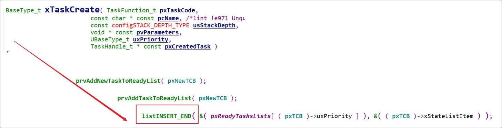我们去创建任务的时候，大家先看看这个调用关系。
他把任务放在某一个链表的尾部：
使用优先级，找到一个链表：pxReadyTasksLists[ ( pxTCB )->uxPriority ]
相同优先级的任务，如果他是就绪态、运行态，那么就会放在同一个链表里。
使用listINSERT_END函数插入链表，即插入到链表的尾部。
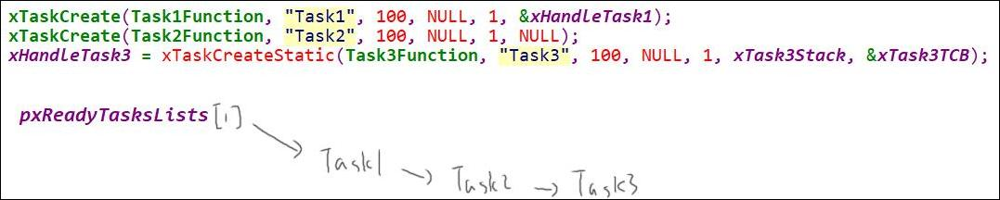我们创建了三个任务，优先级都是1，在列表中就是上面的顺序。
那执行的时候，为什么不是123，而是312 ？
看看红色方框的代码，在task.c文件中：
 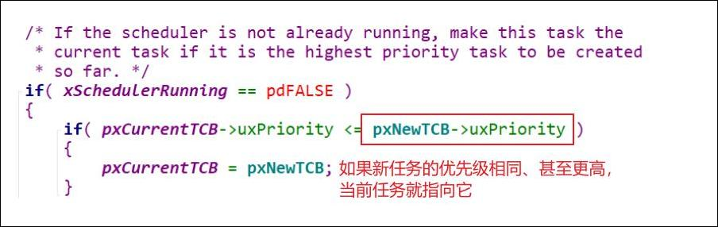
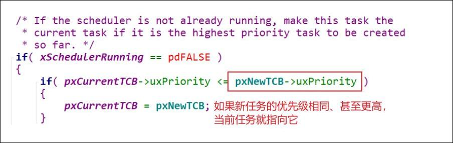现在我们知道了：刚创建的任务，会根据他的优先级，放入某个就绪列表。
8.4.2 就绪链表插入
哪一个就绪链表？
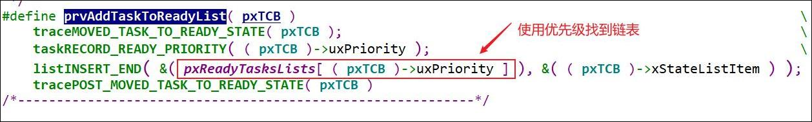我们再来看看：暂停状态的任务，在哪一个链表里？
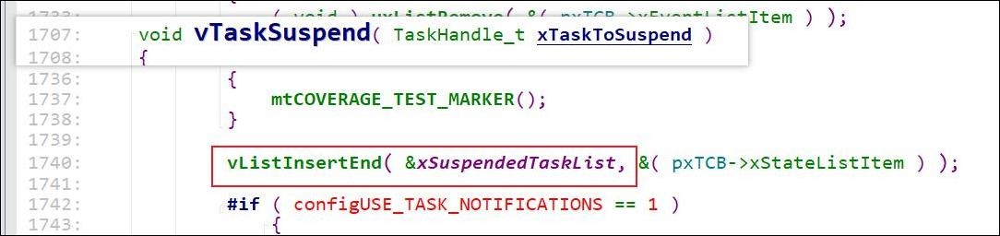可以看到，被暂停的任务，也会放入一个专属的链表xSuspendedTaskList
8.4.3 阻塞链表插入
阻塞状态的任务，又被放入什么链表？
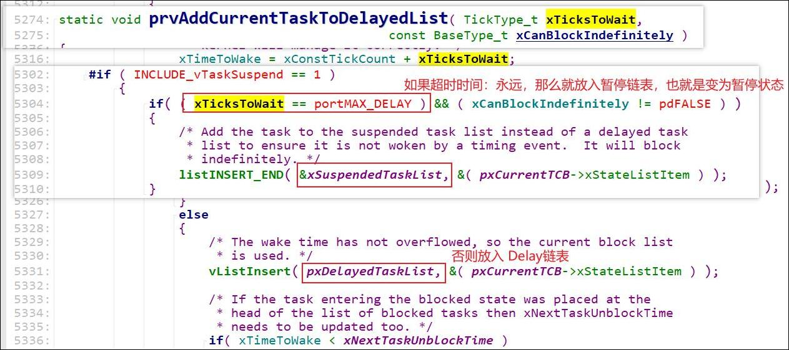阻塞状态：可以等待一段时间，如果等待的时间设置为无限，那他就是暂停状态。
9. 任务状态实验
对应程序：08_freertos_example_task_status
9.1 任务暂停/堵塞规定时间测试
9.1.3 测试结果
测试方法：
任务1运行过程中通过xTaskGetTickCount()函数获取当前的系统时间计数数值，并在任务1执行ms后暂停任务3，执行20ms后恢复任务执行
任务2在运行1ms后进入阻塞状态，10ms后再运行
如果想按照Tick数目而不是ms来运行的话，最好在这个函数中使用宏pdMS_TO_TICKS(ms)，可以把毫秒转换为Tick数。


注意这里我设置的三个任务优先级都是1，所以在任务1延时后，它会处于Blocked阻塞状态，等待它前面的任务执行完毕后再开始执行。


这里我修改了任务2的优先级为2，这里可以明显的看出差别了，任务2 在延时10ms后执行，响应速度非常快

10. vTaskDelay和VTaskDelayUntil函数讲解

我们平时使用vTaskDelay函数时，这个函数保证的是该任务在两次执行之间间隔的延时N，但是存在一个问题就是我们在执行这个延时函数之前，需要在任务中先执行我们的代码，而我们代码所做的事情如果执行时间不确定，那么就会出现如下的一种情况：

我们无法确定这个任务下次执行的时间，所以我们引入vTaskDelayUntil函数，来确保任务每次开始的时间间隔一致，
即：△t1 = △t2
为了更加了解这两个函数，我们使用这样的测试代码
static int rands[] = {3, 56, 23, 5, 99};
void Task1Function(void * param)
{
TickType_t tStart = xTaskGetTickCount();
int i = 0;
int j = 0;
while (1)
{
task1flagrun = 1;
task2flagrun = 0;
task3flagrun = 0;
for (i = 0; i < rands[j]; i++)
printf("1");
j++;
if (j == 5)
j = 0;
#if 0 /********************通过这个宏开关来选择函数*********************/
vTaskDelay(20);
#else
vTaskDelayUntil(&tStart, 20);
#endif
}
}
/*-------------------main函数------------------------*/
int main( void )
{
#ifdef DEBUG
debug();
#endif
prvSetupHardware();
printf("Hello, world!\r\n");
xTaskCreate(Task1Function, "Task1", 100, NULL, 2, &xHandleTask1);
xTaskCreate(Task2Function, "Task2", 100, NULL, 1, NULL);
xHandleTask3 = xTaskCreateStatic(Task3Function, "Task3", 100, NULL, 1, xTask3Stack, &xTask3TCB);
/* Start the scheduler. */
vTaskStartScheduler();
/* Will only get here if there was not enough heap space to create the
idle task. */
return 0;
}
接下来粗略了解这两个函数
10.1 vTaskDelay：
这个函数有点意思，前文中我有记录踩坑，请查看8.1.4记录，这里有一个代码习惯的问题
至少等待指定个数的Tick Interrupt才能变为就绪状态
void vTaskDelay( const TickType_t xTicksToDelay ); /* xTicksToDelay: 等待多少个Tick */
函数vTaskDelay用于任务的延迟。
typedef uint32_t TickType_t;
#define portMAX_DELAY ( TickType_t )0xffffffffUL
即延迟时间的范围是：1- 0xFFFFFFFF

上次任务结束和下次任务开始间隔相同
10.2 vTaskDelayUntil:
/* pxPreviousWakeTime: 上一次被唤醒的时间* xTimeIncrement: 要阻塞到(pxPreviousWakeTime + xTimeIncrement)
* 单位都是Tick Count
*/BaseType_t xTaskDelayUntil( TickType_t * const pxPreviousWakeTime,const TickType_t xTimeIncrement );
函数vTaskDelayUntil用于周期性延迟。
使用这个函数要注意以下问题：
1. 使用此函数需要在FreeRTOSConfig.h配置文件中配置如下宏定义为1
#define INCLUDE_vTaskDelayUntil 1

两次任务开始时刻的间隔相同△t1 = △t2
11. 问题补充
问：阻塞和挂起的任务都不消耗cpu吗？
答：等会我们讲调度了流程时，你就会体会到：不消耗CPU。
问： 老师，根据优先级添加任务，如果两个任务的优先级不同 是吧优先级低的插入尾部，还是随机的啊？
答： 任务的优先级不同，放到的链表就不一样。
比如任务1的优先级是1，放入链表：pxReadyTasksLists[1]
任务3的优先级是2， 放入链表：pxReadyTasksLists[2]
问：xDelayedTaskList1 xDelayedTaskList2，有两个delay表？
答：你暂且认为只有一个，确实有两个。
为了处理tick计数值溢出才设置了两个，在初级阶段，暂且认为有一个就可以。
问：rtos实际开发的时候会不会也学linux关闭中断嵌套？关闭吧，降低实时性，不关闭吧，嵌套太多功能就会错误？
答：FreeRTOS允许中断嵌套，断优先级不要设置那么多，同等优先级的中断不会嵌套。
紧急处理的事情，优先级定的高一点；很重要的中断，优先级设置的高一点，高优先级的事情尽快处理。